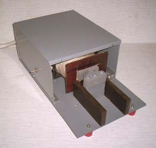
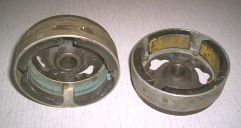

Устройство для
импульсного одноосного реверсивного намагничивания
полюсов ротора электрического генератора на постоянных магнитах

Назначение
Устройство предназначено для работы в составе установок
намагничивания [5] в комплекте с однополярным импульсным генератором [1] или
емкостным накопителем энергии [2]. Оно позволяет намагничивать подковообразные
постоянные магниты на основе ферритов марок БА, СА, РА или сплавов ЮНД, ЮНДК,
расположенные на внутренней поверхности ротора электрического генератора (рис.
1). Намагничивание осуществляется последовательно (по одному полюсу). Полярность
намагничивания изменяется с помощью переключателя направления тока.

Рис. 1. Ротор электрогенератора с подковообразными постоянными
магнитами. Внешний диаметр ротора 143 мм.
Технические данные:
- зона намагничивания подковообразная; размеры зоны
намагничивания соответствуют размеру магнита
- намагничивание переменной полярности; направление
намагничивания - по оси симметрии полюса
- амплитуда магнитной индукции в зоне намагничивания не
менее 1 Тл при амплитуде импульса тока не более 1000 А
- неоднородность магнитного поля в зоне намагничивания не
более 15 %
- длительность импульса тока не более 30 мс
- форма импульса тока произвольная (например,
колоколообразная или с экспоненциальным фронтом и спадом)
- максимально допустимая амплитуда импульса тока 1500 А
- готовность к работе - сразу после включения
- средняя потребляемая мощность при частоте следования
импульсов тока амплитудой 1000 А и частотой 0.1 Гц не превышает 300 Вт
- габаритные размеры не более 450 х 250 х 175 мм3
(без органов управления и подключения)
- масса не более 15 кг
Устройство состоит из индуктора с магнитной системой, столика
для установки ротора и переключателя направления намагничивающего тока. Все узлы
смонтированы на основании с передней и задней панелями и закрыты сверху кожухом.
При работе ротор устанавливается на столик намагничивающего устройства таким
образом, чтобы постоянный магнит находился в зоне намагничивания. С помощью
переключателя выбирается полярность намагничивающего поля. Производительность до
200 циклов намагничивания в час (50 роторов по 4 магнита на каждом). На рис. 2,
3 показан внешний вид установки намагничивания в комплекте с различными
импульсными генераторами.

Рис. 2. Установка намагничивания в комплекте с однополярным
генератором мощных импульсов тока [1].

Рис. 3. Установка намагничивания в комплекте с емкостным
накопителем энергии [2].
Для контроля корректности выбора полярности и качества
намагничивания роторов могут использоваться тесламетры с датчиком Холла
[4]. Измерение магнитной
индукции проводится в характерной точке - в центре полюсного наконечника на его
поверхности. Если необходимо определить только полярность намагничивания, то
можно воспользоваться специальным указателем магнитных полюсов
[3].
Ссылки:
- Генератор мощных
импульсов тока однополярный
- Генератор мощных импульсов
тока (емкостной накопитель энергии)
-
Магнитно-механический указатель-индикатор магнитных полюсов и направления
магнитного поля
- Приборы для
измерения магнитных полей
- Установки
импульсного намагничивания и размагничивания постоянных магнитов
Словарь
терминов:
- Генератор импульсов - прибор или устройство для
создания последовательности импульсов.
- Импульсный генератор - генератор
импульсов напряжения или тока.
- Индуктор - генератор индукции.
- Магнитная индукция - вектор, численно
равный пределу отношения силы, действующей со стороны магнитного поля на
элемент проводника с электрическим током, к произведению тока и длины
элемента проводника, если длина этого элемента стремится к нулю, а элемент
так расположен в поле, что этот предел имеет наибольшее значение, и
направленный перпендикулярно к направлению элемента проводника и к
направлению силы, действующей на этот элемент со стороны магнитного поля,
причем из его конца вращение по кратчайшему расстоянию от направления силы к
направлению тока в элементе проводника должно быть видно происходящим против
часовой стрелки.
- Намагничивание
- воздействие на образец магнитным полем, вследствие которого у образца
появляется отличная от нуля остаточная намагниченность.
- Постоянный магнит - объект, создающий
магнитное поле за счет собственных внутренних элементарных электрических
токов, текущих без использования внешнего источника энергии в составляющем
объект материале.
- Феррит бария - магнитотвердый материал
на основе окислов железа и бария состава BaO·6Fe2O3. В
обозначении марки (например, 19БА190) первое число (19) обозначает
энергетическое произведение (в кА·Тл/м), первая буква - состав феррита (Б -
бариевый), вторая буква - свойства (А - анизотропный, И - изотропный),
второе число (190) - коэрцитивную силу по намагниченности (в кА/м).
- Феррит стронция - магнитотвердый
материал на основе окислов железа и стронция состава SrO·6Fe2O3.
В обозначении марки (например, 28СА250) первое число (28) обозначает
энергетическое произведение (в кА·Тл/м), первая буква - состав феррита (С -
стронциевый), вторая буква - свойства (А - анизотропный, И - изотропный),
второе число (250) - коэрцитивную силу по намагниченности (в кА/м).
- Электрогенератор (электрический генератор)
- преобразователь неэлектрической энергии источника в электрическую энергию.
- ЮНД, ЮНДК - отечественное обозначение группы
магнитотвердых сплавов на основе железа, алюминия, никеля, кобальта с
легирующими добавками, получаемых методами литья (сплавы ЮНД, ЮНДК) или
порошковой металлургии (металлокерамические сплавы ММК). Буквы в обозначении
марки сплава обозначают: Ю - алюминий, Н - никель, Д - медь, К - кобальт, Б
- ниобий, С - кремний, Т - титан, а цифры - процентное содержание элемента
(железо не обозначается). Применяются для изготовления постоянных магнитов.
См. также ални, алнико.
01.08.2006
23.06.2010
04.03.2018
Альтернативные источники
энергии
Компьютеры и
Интернет
Магнитные поля
Механотронные системы
Перспективные
разработки
Электроника и
технология
Главная страница